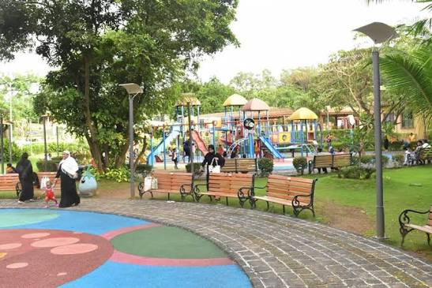
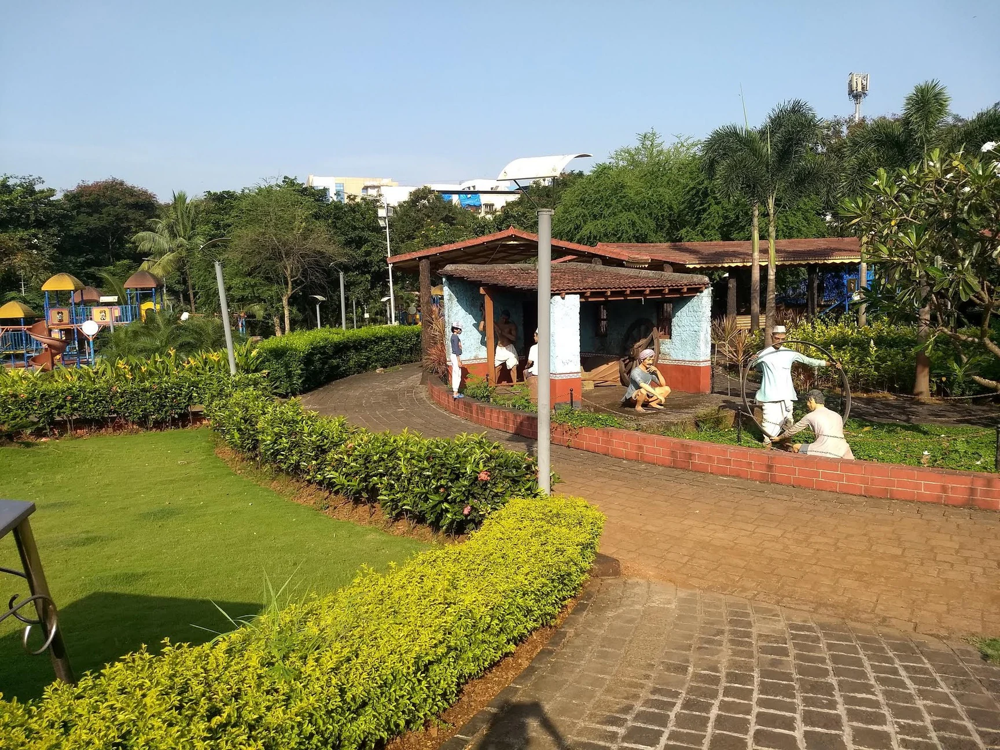
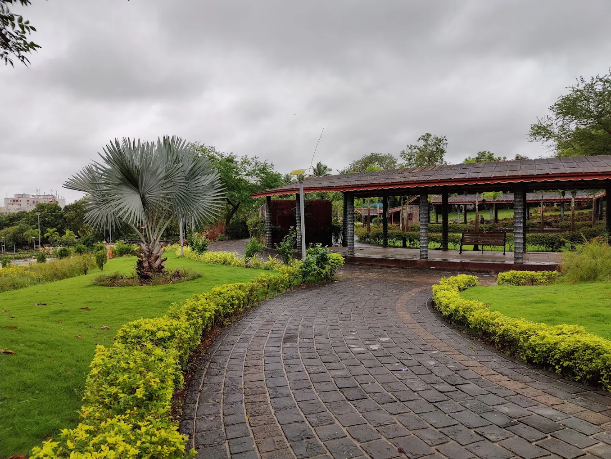
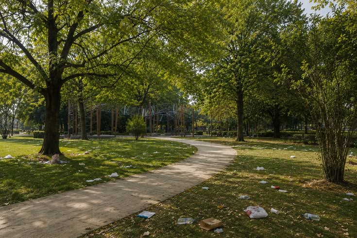
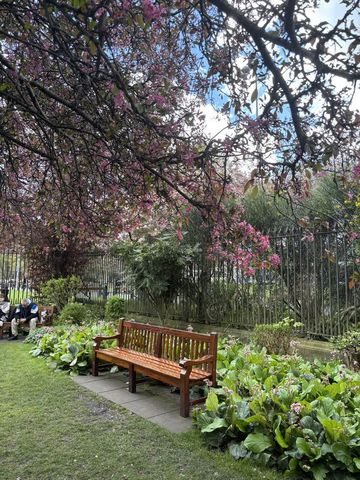

PARK 01
Field Observations
Findings documented from the field photographs supplied with the project and read alongside the completed 20-response survey.
FIELD STUDY
What We Observed
The observations below stay within what is supported by the supplied photographs and survey summary.
Visitor Activity
Activities and common reasons for visiting were recorded through the survey and visual field record.
Movement & Areas
Paths, green areas and recreation spaces are visible in the field photographs.
Maintenance
Cleanliness, waste and physical condition are key parts of the recorded findings.
Survey Evidence
Each park has 20 respondents and the survey summary reports the most-selected response for 15 questions.
OBSERVATION RECORD
Field Visit Findings
Photographic evidence and the survey summary are used together to describe the public space.
Visitor activity
Walking and jogging are the most selected main purpose in the survey (35%). The photographs also show open walking routes and active recreational areas.
Physical condition
One field photograph clearly shows a damaged/uneven paved section that may affect comfortable movement through the park.
Cleanliness & maintenance
Photographs show litter/waste in some planted areas. The survey also identifies maintenance and waste management as improvement concerns.
Facilities & use
The photographs show benches, landscaped areas, a children’s play area and a lighting fixture, giving a mix of recreation, rest and movement spaces.
FIELD PHOTOGRAPHS
Observation Photos
Photographs supplied with the project.

Recreation and visitor-use area

Park pathway / landscaped area

Park greenery and public-space setting

Field condition: damaged paving

Field condition: lighting / planted area